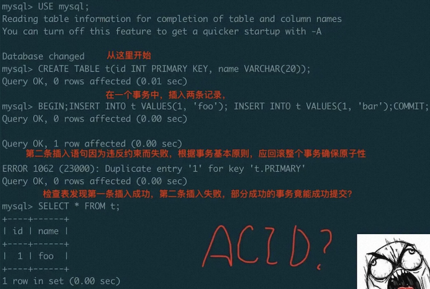

1. 前言
事务系统是 InnoDB 实现 MVCC 及 ACID、进行事务并发控制的核心模块。本文主要讨论事务系统结构和一个事务的执行流程（基于 MySQL 8.0.30），需要涉及到对 redo、undo 系统的相关知识。本文还会涉及一部分 MVCC 和 事务锁的讨论，但是更详细内容会在对 Concurrency Control 讨论的文章中给出。
2. 事务和事务系统的内存结构
事务和事务系统对应的内存结构分别是 trx_t 和 trx_sys_t。每个 session 连接持有一个 trx_t，其在创建连接执行第一个事务开始整个结构体就在 innobase_trx_allocate 初始化了，后续这个连接的所有事务一直复用此数据结构，直到连接断开。
- 事务启动后不管读写，把这个结构体加入到全局事务链表中 (trx_sys->mysql_trx_list)；
- 如果转换为读写事务，还会加入到全局读写事务链表中 (trx_sys->rw_trx_list)；同时，读写事务在开启时（更确切的说是在分配回滚段时）通过全局 id 产生器产生以区分不同的写事务（这里 trx_id 只读事务为0，只读事务只需要通过指针地址来获取区分，如果只读事务需要写临时表，也会分配）；同时，还会分配回滚段给 trx_t 以供记录 undo record。
- 在事务内存提交的时候，还会加入到全局提交事务链表中(trx_sys->serialisation_list)。同时，在 trx 提交时 (
trx_commit_low的trx_write_serialisation_history) trx_no 字段通过全局产生器产生并加入 serialisation_list，这样可以确定事务提交的顺序，保证加入到 purge_queue 和 history list 中的 update undo 有序。然后在提交的最后阶段 (trx_commit_low的trx_commit_in_memory)，删除 serialisation_list、释放所有事务锁、清理 insert undo、等待刷完 redo log。
|
|
|
|
MySQL 的事务有如下四种隔离级别，不同的级别下事务的事务锁加锁逻辑不同。
|
|
3. 事务开启
用户可以通过 START TRANSACTION [READ WRITE] / [WITH CONSISTENT SNAPSHOT] / [READ ONLY] 等语句显示开启（不同特性的）事务 (trans_begin)。显式开启事务的行为都会隐式的将上一条事务提交掉。只有通过 WITH CONSISTENT SNAPSHOT 的方式才会在开启时就进入InnoDB层，（调用 innobase_start_trx_and_assign_read_view）去开启一个 trx 并通过 trx_assign_read_view 分配 readview，否则会在事务第一次需要进行一执行读的时候分配 readview。
对于 InnoDB 通过 trx_start_low 在存储层真正配置 trx_t 对象，将事务设置 TRX_STATE_ACTIVE 及相关读写状态，对于读写事务还会（或切换为读写事务 trx_set_rw_mode）：
- 分配 undo 回滚段，
trx_assign_rseg_durable，通过轮询方式从 undospace 中分配一个有效的回滚段； - 分配 trx id，并将其加入全局的活跃事务id数组 trx_ids_t、读写事务队列 rw_trx_list 和 活跃事务对象哈希表 shards。
4. 事务提交
事务的提交分为两种方式，一种是隐式提交，一种是显式提交。显式开启一个新的事务，或者执行一条非临时表的DDL语句时，就会隐式的将上一个事务提交掉。另外一种就是显式的执行“COMMIT” 语句来提交事务。 在 MySQL 的 server 层有两个提交函数 trans_commit_stmt 和 trans_commit，前者在每个语句执行完成时都会调用，而后者是在整个事务真正提交时候调用。
再往前进一层到 handler 接口处，为了保证分布式/多事务引擎事务的一致性，MySQL 实现了经典的 XA 标准，使用两阶段提交 2PC 协议来保证一个全局事务在所有参与节点要么都提交，要么都中止。如果不需要实现分布事务的能力，则不会进行 XA 实际操作。
MySQL的 XA 事务支持包括内部 XA 和外部 XA。内部 XA 事务主要指单节点实例内部，一个事务跨多个存储引擎进行读写，那么就会产生内部XA事务；另外，若打开 binlog 需要保证 binlog 与引擎修改的一致性，即使事务只涉及一个引擎，MySQL 内部也会启动 XA 事务。外部 XA 事务与内部 XA 事务核心逻辑类似，提供给用户一套 XA 事务的操作命令，包括 XA start，XA end，XA prepre 和 XA commit等，可以支持跨多个节点的 XA 事务。外部 XA 的协调者是用户的应用，参与者是 MySQL 节点，需要应用持久化协调信息，解决事务一致性问题。无论外部XA事务还是内部XA事务，存储引擎实现的都是同一 prepare 和 commit 接口。
在开启 binlog 情况下，则 XA 控制对象（TC_LOG）为 MYSQL_BIN_LOG；若关闭了binlog，且存在不止一种事务引擎时，则 XA 控制对象（TC_LOG）为 TC_LOG_MMAP；若没有 XA 需求则实际上无需任何协调者，使用的是 TC_LOG_DUMMY。这里下文不对 XA 控制流程做进一步的讨论，主要讨论 InnoDB 层在事务提交时的操作。
在 tc_log->commit 阶段会调用引擎层的事务提交接口，InnoDB 的接口函数为 innobase_commit。trans_commit_stmt 和 trans_commit 两者最后都会走到 innobase_commit 中，但其有一个参数 commit_trx 来进一步控制是否真的进行存储引擎层的提交处理，trans_commit_stmt 会设置 commit_trx 为 0 而 trans_commit 会设置为 1。只有当 commit_trx = 1 或者设置 autocommit = 1 的情况下，才会真正进入事务提交逻辑。
顺便一提在知乎上看到过一个很有意思的说法，有人通过下面这个图来总结出：“结果MySQL的默认表现竟然是允许部分成功的事务提交（写入一条，丢弃一条），也就是丧失了原子性。 没有原子性就没有一致性”。这个说法如果是对数据库原理，或者数据库实现源码了解不太深入的人很容易混淆，它错误的将语句和事务概念混淆，导致了错误的结论。另外，实际业务中应用端是需要对 DB 的操作返回状态进行判断处理的，这也是 rollback 操作存在的意义之一。 
InnoDB 的事务提交 trx_commit_low 主要分成两个部分 trx_write_serialisation_history 和 trx_commit_in_memory。
trx_write_serialisation_history主要是处理事务所使用的 insert / update 回滚段- 对于 undo 只使用单个 page 且使用量小于 3/4 的会被设置为 TRX_UNDO_CACHED 状态；其余的 insert undo 状态被设置为 TRX_UNDO_TO_FREE，update undo 状态被设置为 TRX_UNDO_TO_PURGE；
- 给 trx 分配提交顺序 trx_no，并且加入 serialisation_list；
- 将使用过的 undo 回滚段内存结构加入 purge_sys->purge_queue 这一队列（其内按事务提交时的 trx->no 排列）以给 purge 系统定位回收；
- 将 trx->no 写入 rseg/undo header，并 undo header 将加入到 rseg header 中 history list 的开始；
- 对 update undo，内存结构 trx_undo_t 按状态加入 rseg->update_undo_cached 或释放 trx_undo_mem_free；
trx_commit_in_memory处理事务锁、Readview、savepoint 等- 在 trx_sys 系统中清理当前事务，等到没有隐式锁引用后释放所有事务锁并尝试唤醒阻塞事务；
- 对 insert undo，内存结构 trx_undo_t 按状态加入 rseg->insert_undo_list 或释放 trx_undo_mem_free，并且在 rollback segment 中清理不在 history 的 insert undo segment（trx_undo_seg_free）；
- 非 2PC 时等待 redo 落盘；
- 清理所有 savepoint
5. 事务回滚
当由于各种原因（例如死锁，或者显式回滚）需要将事务回滚时，会调用接口 trans_rollback，进而调用 InnoDB 函数 trx_rollback_for_mysql 来回滚事务。另外类似 commit 逻辑分为语句级别和事务级别，如果 SQL 语句级别的执行失败，就会进行语句级别的回滚操作 trx_rollback_last_sql_stat_for_mysql 来回滚语句。两种最终又会通过 trx_rollback_to_savepoint 回滚到对应的 savepoint，而 savepoint 是通过 undo_no 来标记回滚到哪个事务状态。
- 构建一个回滚用的执行图节点，启动执行图，首先通过 QUE_NODE_ROLLBACK 类型用 trx 上的相关信息构建其内执行的 undo 执行节点（undo_node_t 类型）；
- 再以 QUE_NODE_UNDO 类型进行具体的数据回滚操作（这块操作可以参见 Undo Log 代码学习 这一章节）。
- 版权声明：如需转载或引用，请附加本文链接并注明来源。